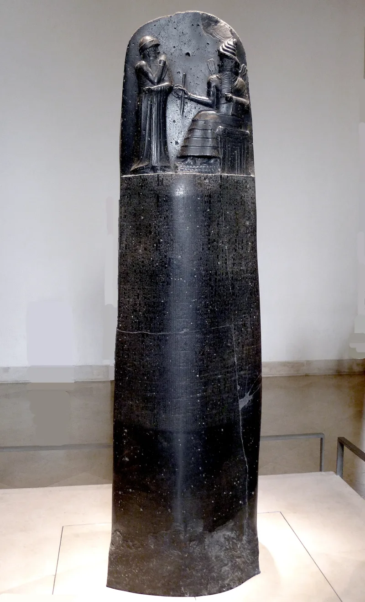

The camps never answer this objection. Ask it, then wait.
This case is about reasoning rather than any one verse. The argument runs: the curses describe X.
We experienced X. Therefore we are the cursed people.
Deuteronomy 28 never says only Israel will suffer these things. Much of the chapter is standard treaty language from the ancient Near East — the same threats appear in Assyrian treaties about other nations entirely.
Being described by a passage does not prove descent from the people it addresses.
They reply that it is cumulative, not formal. Any one curse might fit many peoples.
But Deuteronomy 28 is dozens of specific conditions together, and the odds collapse as the list gets longer. Which other people was shipped, sold, and stripped of its name and language all at once?
Strong for you. The camps mostly do not take up the logic at all.
Their best move is Deuteronomy 28:46. It is a thoughtful move.
But it shows the curses are a sign — not that suffering proves ancestry.
It moves the conversation off a competition about who suffered most. Nobody has to lose that argument for the gospel to be true.
"If another nation suffered all of this too, would that make them Israel?"

God called the curses 'a sign,' and dozens of them fit one people together.
Their answer is cumulative rather than formal. Any single curse might fit many peoples, they concede. But Deuteronomy 28 is a package of dozens of conditions. The odds collapse as the list lengthens.
Which other people was carried by ship, sold as chattel, and stripped of its name and language and religion? Which was made a byword and a proverb? Which served a nation whose tongue it did not understand? Which watched its sons and daughters given to another people, and remains without rest four centuries later?
They add that God Himself framed the curses as a sign. 'They shall be upon thee for a sign and for a wonder, and upon thy seed for ever' (Deuteronomy 28:46). A sign is meant to be read. If the curses were never meant to identify anyone, why would God call them a sign?
Strong for you. The camps mostly never take up the logic at all.
Graded unrefuted rather than answered, because the camps mostly do not engage the logic at all.
The Deuteronomy 28:46 reply is their best move, and it is genuinely thoughtful. But it proves that the curses signal judgment to people already known to be Israel. It does not show they confer identity on whoever matches the list.
The cumulative version also quietly gives up the movement's own certainty. Odds arguments yield likelihood. They do not yield the absolute claim that only one people can be Israel, and everyone else is a fake. And the exclusive edge cuts against them. Ezra shows Israel settling membership by written genealogy, and no camp can produce one.